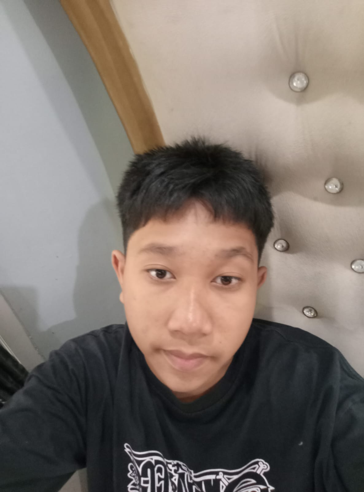
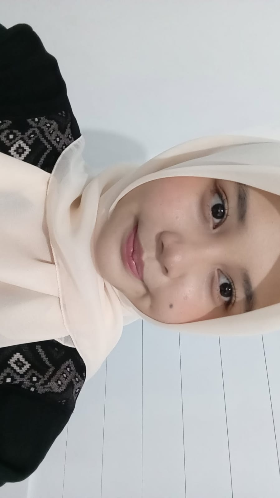
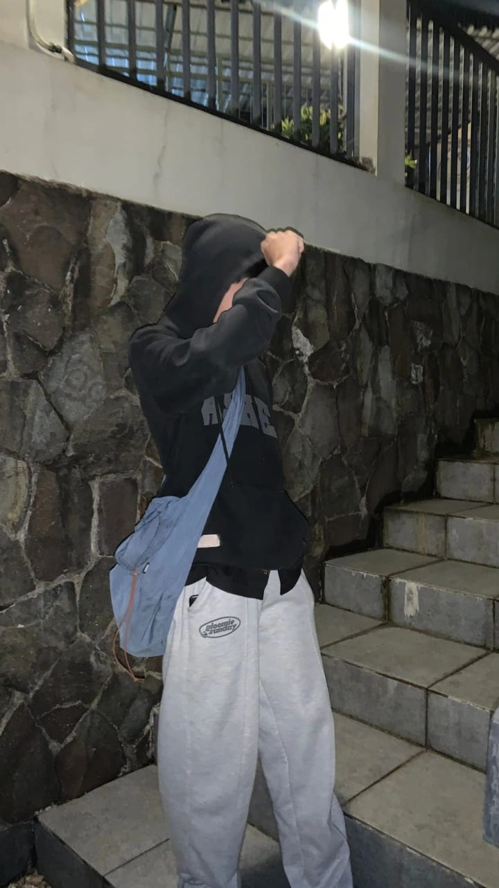

Tujuan & Visi Kami
Sahabat Laundry didirikan sebagai bentuk solusi digital masa kini dari proyek akhir kami. Website ini berfokus pada kemudahan pengguna untuk mencuci baju tanpa repot keluar rumah. Selain untuk tujuan produktif, proyek ini dibuat agar kami dapat langsung mempraktikkan keterampilan Pengembangan Website Modern (UI/UX, Sistem Interaktif, dan Kerapihan Layout) secara profesional.

Tim Pengembang Kami

M. Azzam Aruna.R
Frontend & HTMLMerancang struktur keseluruhan website, memastikan aksesibilitas, dan menyusun pondasi kerangka komponen agar terbentuk aplikasi yang solid.

Levina Putri Azzelya Rahmat
UI/UX & CSS StylingBerpean penting meracik keindahan antarmuka web, menerapkan palet warna yang premium, tata letak visual modern, dan animasi interaktif.

Moh. Khanapi
Backend & JavaScriptMemprogram logika fungsional inti mulai dari sistem kasir/order nyata, mengelola database lokal HTML, hingga memastikan sistem berjalan sempurna.